Ünlü Tablolar Koleksiyonu
Sanat tarihinin en seçkin eserleri.
(Büyütmek için tıklayınız)
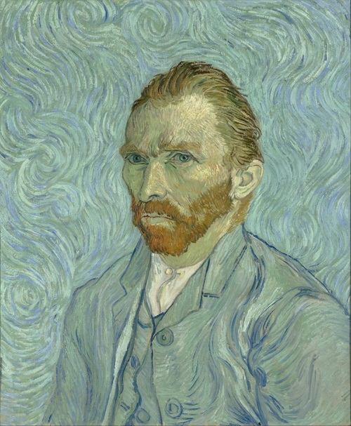
Van Gogh - Otoportre

İzlenim: Gün Doğumu (Monet)

Claude Monet
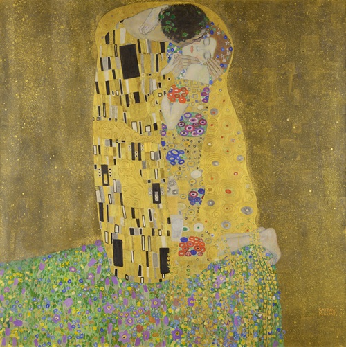
Öpücük (Klimt)

Rafael - Otoportre
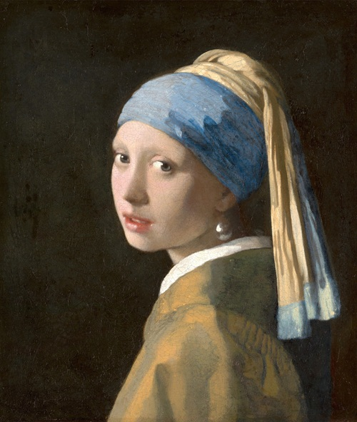
İnci Küpeli Kız (Vermeer)
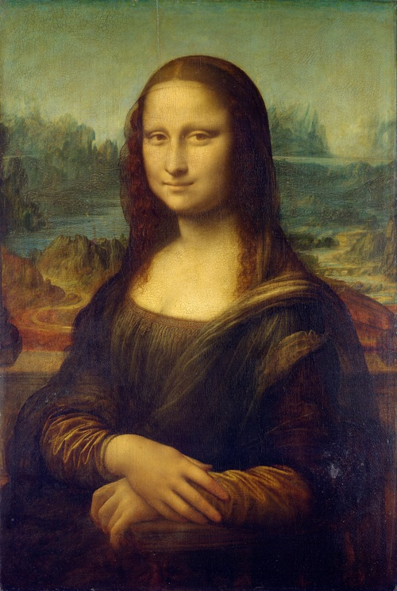
Mona Lisa (Da Vinci)
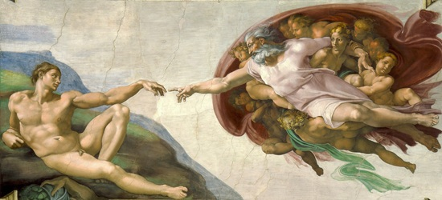
Adem'in Yaratılışı (Michelangelo)
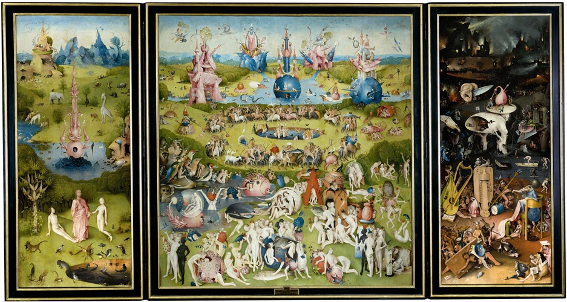
Dünyevi Zevkler Bahçesi (Bosch)
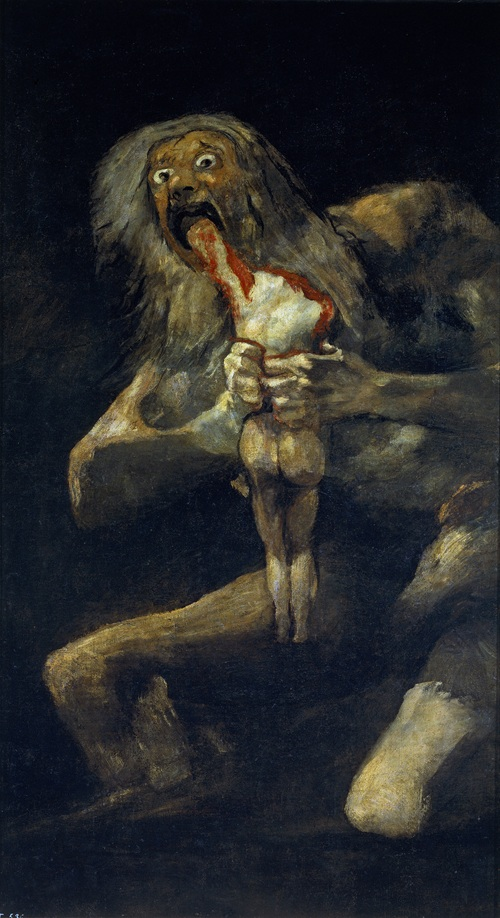
Çocuklarını Yiyen Satürn (Goya)

Badem Çiçekleri (Vincent)
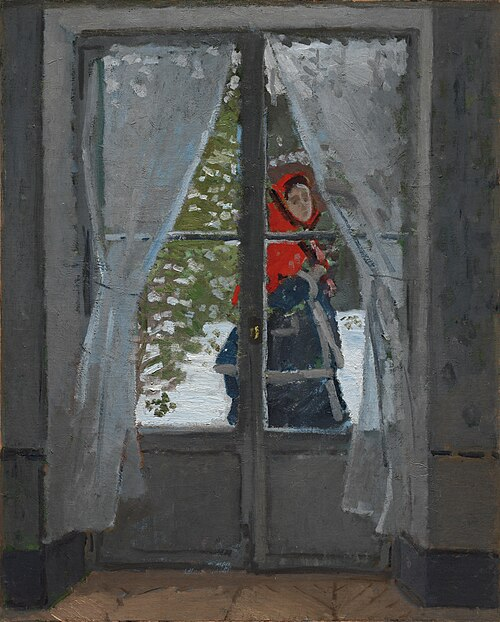
Kırmızı Pelerin (Monet)
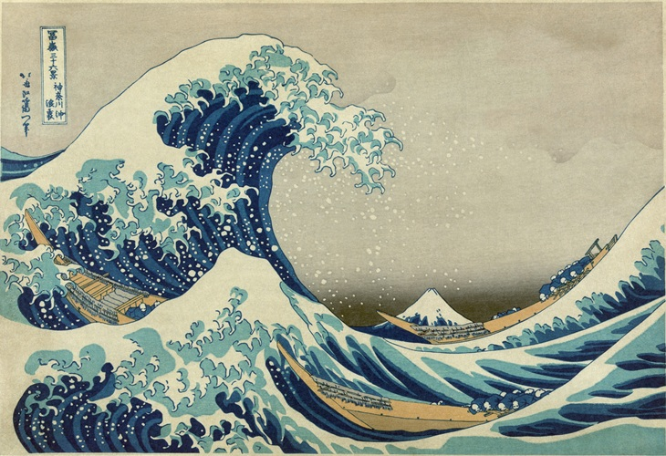
Büyük Kanagawa Dalgası(Hokusai)
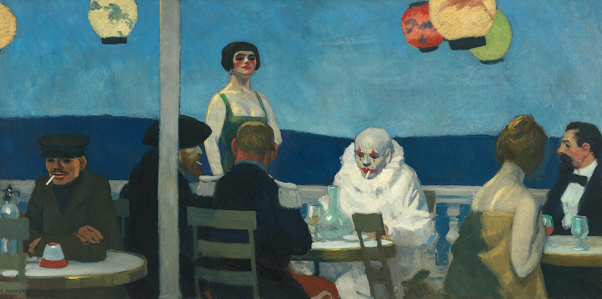
Soir Bleu(Hooper)
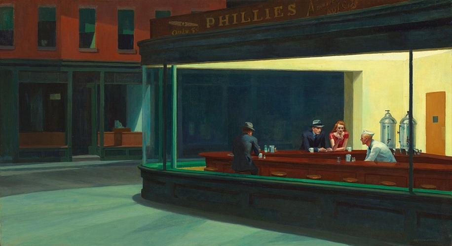
Nighthawks(Hooper)

Atina Okulu(Rafael)
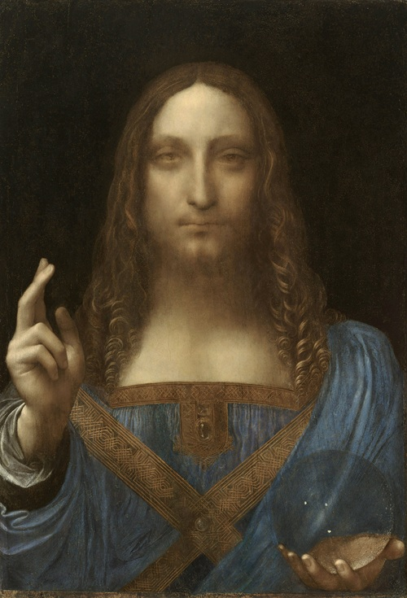
Salvator Mundi(Da Vinci)